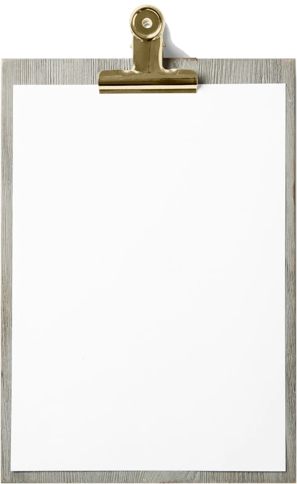
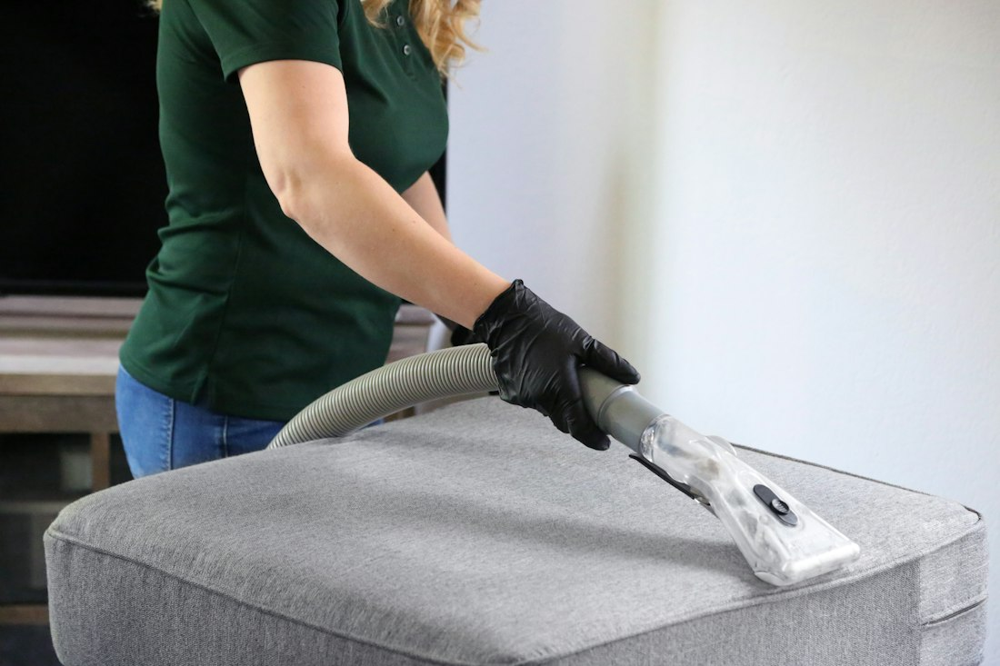
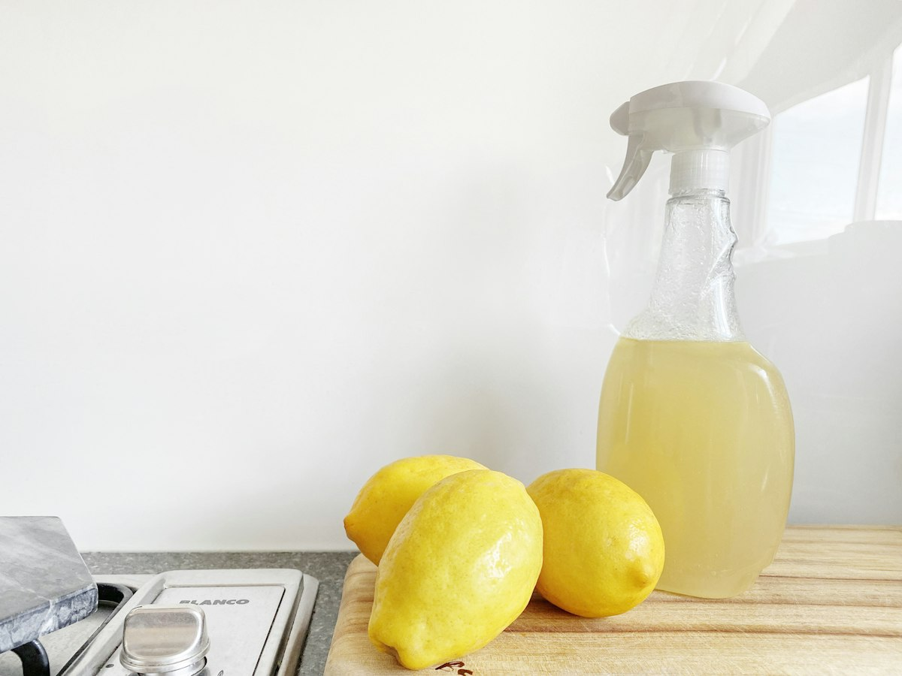
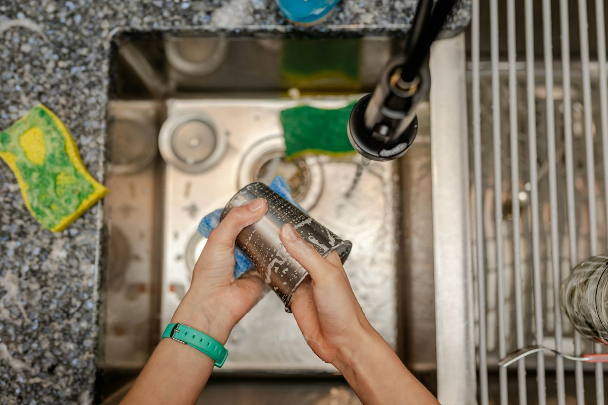
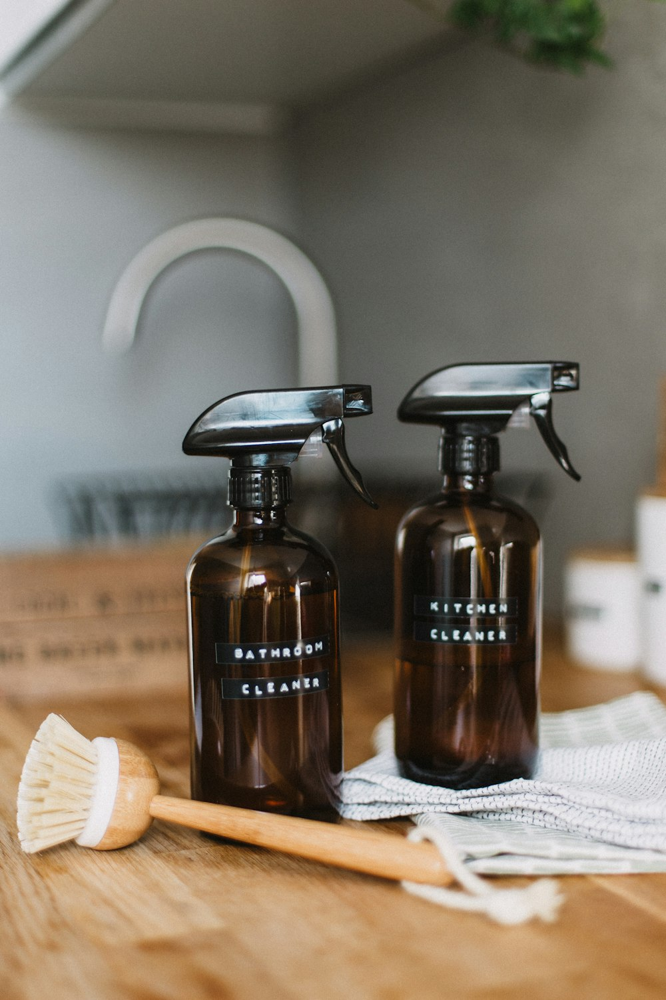
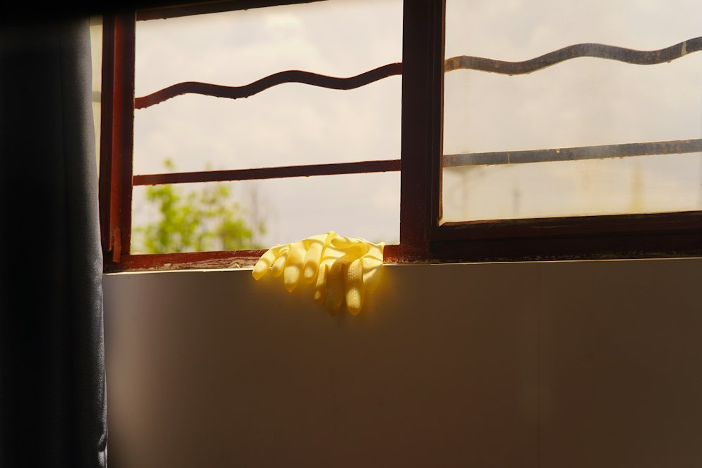
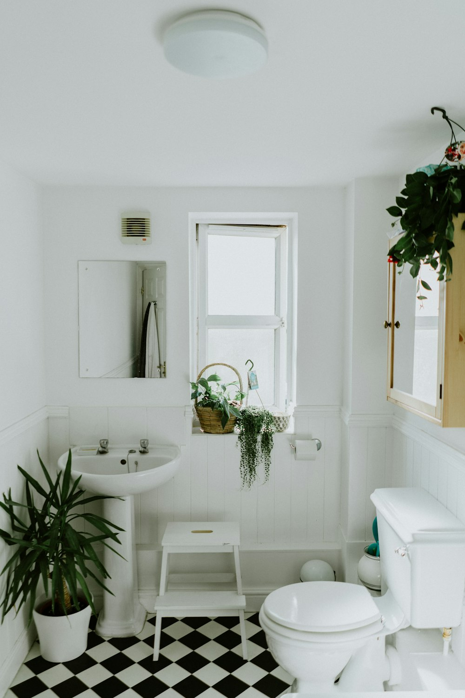
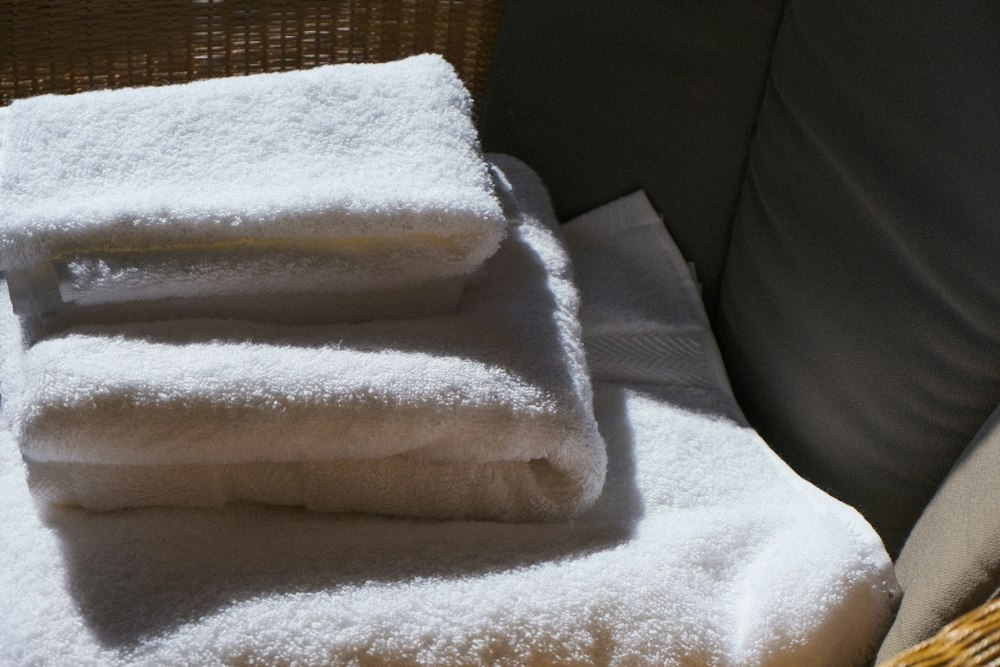

Наряд № 0311-214
генеральная · 64 м² · ул. Родионова
Замечания заказчика
Духовку не узнала. Швы в ванной стали белые, а я думала, они серые с рождения.
Работу принял(а)Анна П.
Уборка квартир в Нижнем Новгороде и Кстово
Отметьте в бланке, что убрать и когда приехать, и сразу увидите цену. Бригада работает по пунктам наряда и расписывается за каждый, а вы принимаете уборку по нему же.

Особые условия наряда
Чужих людей в квартиру пускать страшно. Поэтому всё, что обычно обещают на словах, у нас напечатано на обороте наряда. Бригадир расписывается под этим, вы — тоже.
Если площадь на месте отличается от наряда не больше чем на 10 %, цена не меняется. Новый пункт появляется только с ценой рядом и вашей подписью.
Предоплаты нет. Сначала проходите по наряду, потом платите картой, переводом по QR или наличными. Чек приходит на телефон.
Замечание в течение 24 часов — приезжаем и доделываем бесплатно. Если и после этого плохо — возвращаем деньги за этот пункт.
Испортили — возмещаем по чеку или оценке, до 100 000 ₽. Сумма и порядок записаны в договоре, п. 4.
в договореКладём в конверт с номером наряда и храним в сейфе офиса на Белинского, 61. Отдаём только вам, по подписи.
За 12 часов до приезда — бесплатно, достаточно позвонить. Позже — 500 ₽ за выезд бригады.
О нас
Убираем квартиры в Нижнем Новгороде и Кстово. Каждый наряд ведёт один бригадир: он знает вашу квартиру и отвечает за результат своей подписью.

«Чистовик» — демонстрационный сайт для портфолио, лица взяты со стоковых фото.
Оборот наряда
Список собирается из бланка выше и меняется вместе с ним. Под каждым пунктом — чем его будем мыть.
В день уборки бригадир идёт по этому списку. Чего нет в наряде — не делаем без вашего согласия, что есть — не пропускаем.
Состав
Пишем действующее вещество, pH и сколько проветривать, прежде чем пускать в комнату ребёнка или кота.
Если дома дети, животные или аллергия, берём бережный набор: без хлора и отдушек. Лимонная кислота снимает налёт не хуже кислотного геля, только дольше — поэтому бережный набор на 10 % дороже.

Приложения к наряду
Пять мест, о которых нас спрашивают чаще всего. Не «до и после» — просто как мы это делаем.





Как проходит
Сверяем наряд, спрашиваем про домофон, парковку и питомцев.
С пылесосом, парогенератором и коробкой средств. Бахилы — свои.
Показываете, где сложнее. Новое дописываем в наряд с ценой — или не делаем.
Сверху вниз, от дальней комнаты к двери. За каждый пункт — подпись.
Проверяете по наряду. Есть замечание — в течение 24 часов приедем и переделаем бесплатно.
Графа «Особые отметки»
Не нашли свой вопрос — позвоните, ответим до заказа: +7 831 000-00-00.
Нет. Ключи можно оставить в офисе на Белинского, 61 или у консьержа. Ключи хранятся в конверте с номером наряда, а в конце бригадир присылает фото каждой комнаты.
Да: пылесос, парогенератор, стремянку, микрофибру и набор средств. От вас нужны только вода и электричество.
Цена считается по тому, что вы отметили в бланке. Если площадь на месте отличается не больше чем на 10 %, она не меняется. Если больше, бригадир скажет об этом до начала работы.
Это видно на корешке наряда: время считается по площади и допам. Генеральная уборка двухкомнатной квартиры — обычно два человека и около четырёх часов.
При обходе бригадир отмечает такие места в наряде и показывает вам до начала работы. За то, что испортили мы, отвечаем по договору до 100 000 ₽.
При регулярной уборке приезжает та же бригада. Для разового заказа напишите имя бригадира в комментарии к наряду.
Да, если на улице не холоднее −5 °C. В мороз моем только изнутри и не берём деньги за внешнюю сторону.
Графа «Замечания заказчика»
Так здесь будут выглядеть отзывы — отметки из последней графы наряда. Компания придумана, поэтому пока это примеры.
Наряд № 0311-214
генеральная · 64 м² · ул. Родионова
Замечания заказчика
Духовку не узнала. Швы в ванной стали белые, а я думала, они серые с рождения.
Работу принял(а)Анна П.
Наряд № 2810-118
поддерживающая · 38 м²
Замечания заказчика
Забыли плафон в коридоре. Позвонил — на следующий день приехали и доделали, денег не взяли.
Работу принял(а)Олег С.
Наряд № 1409-305
после ремонта · 81 м² · бережный набор
Замечания заказчика
У сына аллергия, просили без химии. Вечером дома ничем не пахло. Пыль за шкафом тоже достали.
Работу принял(а)Марина К.